Actual Chromium app renders. Baseline eb3c50a → runtime b9fe500. Software WebGL, DPR 0.75, shadows off. These images do not prove physical-phone performance.
Methods and results · Open app
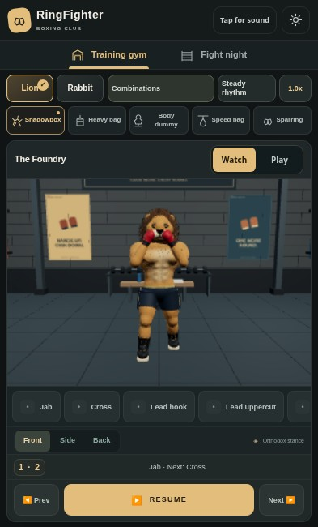
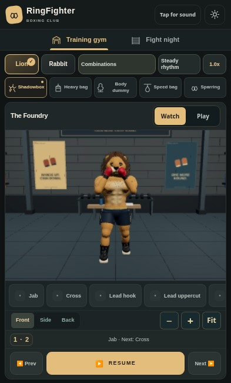
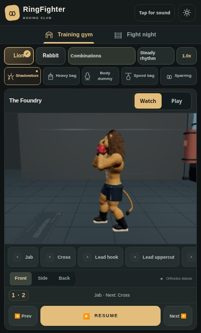
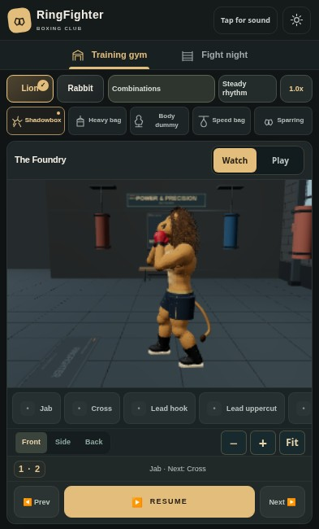
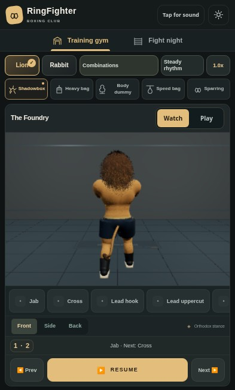
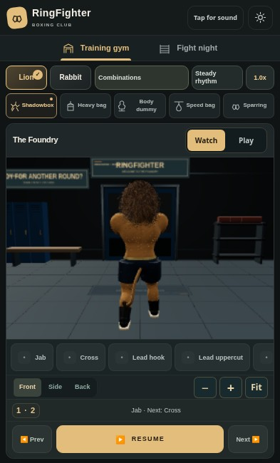
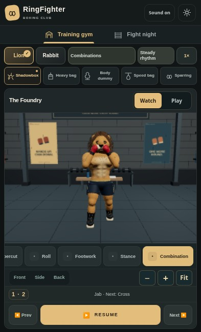
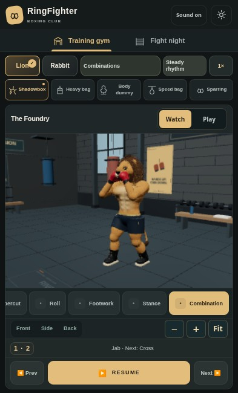
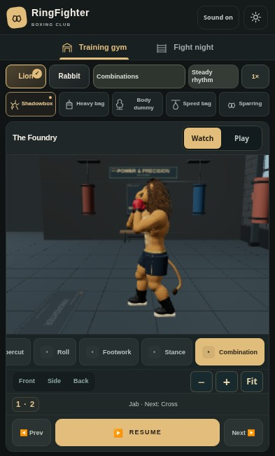
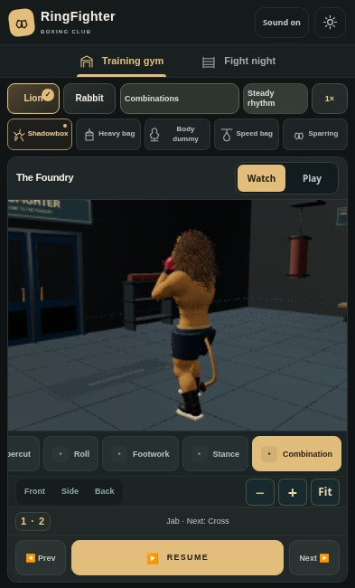
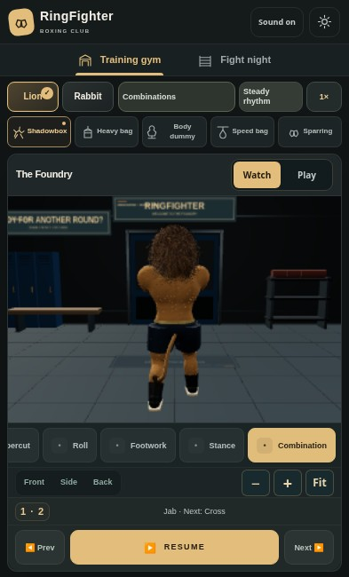
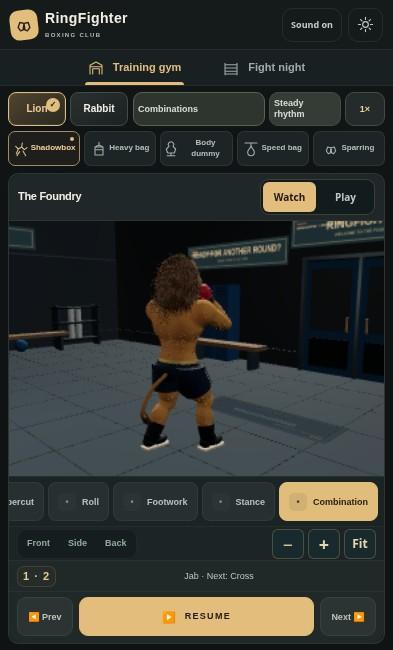
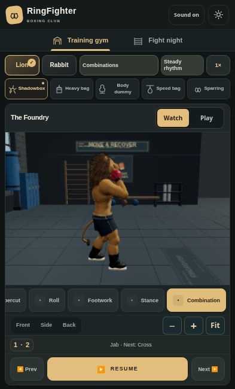
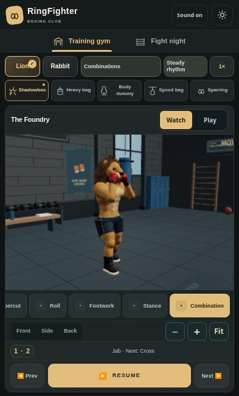
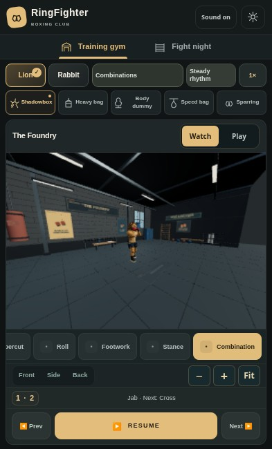
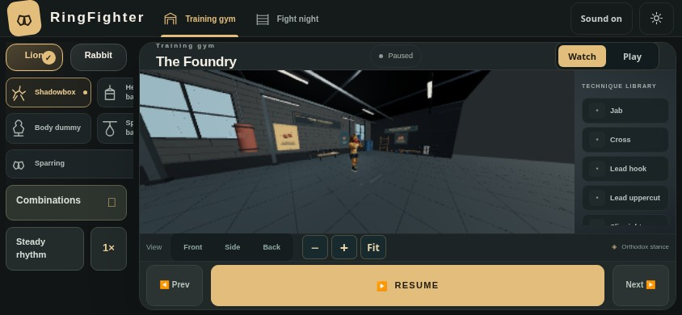
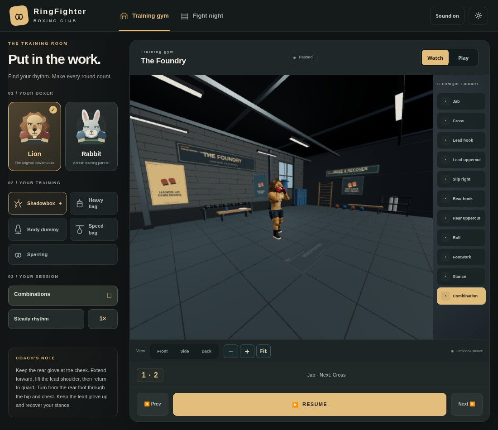